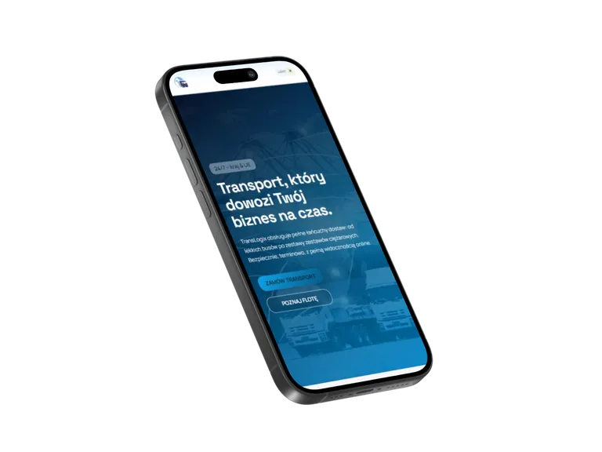
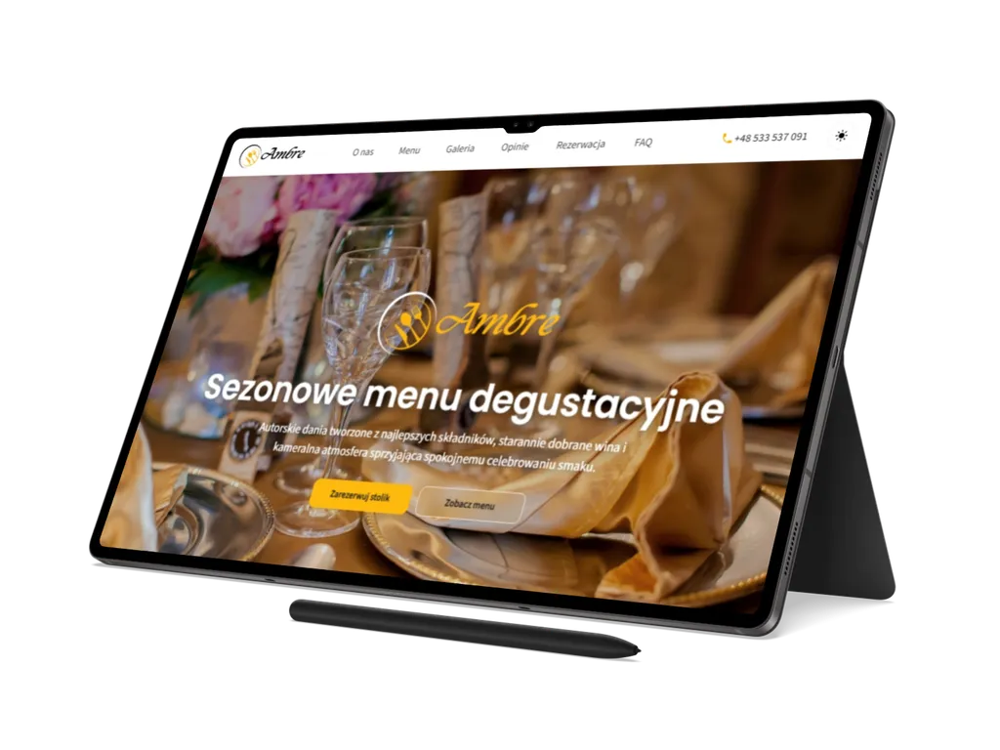

01
TransLogix
Statyczny, wielostronicowy front-end dla marki transportowo-logistycznej, łączący ofertę usług, flotę, cennik, kontakt i zaplecze PWA z powtarzalnym procesem builda oraz kontroli jakości.
Przegląd projektu
TransLogix pokazuje kompletny zakres statycznego serwisu dla branży transportu i logistyki: od strony głównej i usług po flotę, cennik, kontakt, strony prawne oraz tryb offline.
Projekt został przygotowany jako referencyjna realizacja portfolio KP_Code Digital Studio, z jawną strukturą źródeł, powtarzalnym buildem i jakością weryfikowaną przez skrypty npm oraz testy Playwright.
Zakres obejmuje wielostronicową strukturę z widokami usług, szczegółami usługi,
flotą, cennikiem, kontaktem, dokumentami prawnymi, stroną 404 oraz
fallbackiem offline. Dzięki temu TransLogix działa jak pełniejszy serwis B2B, a nie
pojedynczy landing page.
Warstwa interakcji opiera się na Vanilla JavaScript: menu mobilnym, kompaktowym nagłówku, przełączniku motywu, panelu zgody, zakładkach, akordeonie FAQ, filtrowaniu usług i floty, lightboksie galerii oraz stronie szczegółów usługi zasilanej danymi JSON.
Strony
Biznes
Transport
Logistyka
Zakres i akcenty
Case study koncentruje się na praktycznych elementach serwisu logistycznego: strukturze usług, pracy z danymi, formularzu kontaktowym i standardzie technicznym publikacji.
02
Interakcje i formularz kontaktowy
03
Build, QA i gotowość publikacji
Technologie i standard
TransLogix został zbudowany jako statyczny projekt HTML, modularnego CSS i Vanilla JavaScript, z procesem buildowym oraz narzędziami kontroli jakości.
Warstwa runtime opiera się na HTML5, CSS importowanym modularnie przez
assets/css/style.css, modułach ES, Service Workerze i Web App
Manifeście. Tooling obejmuje Node.js, npm, PostCSS, Autoprefixer, cssnano,
html-validate, pa11y-ci, Playwright, Lighthouse CI, http-server i Sharp.
- wielostronicowy front-end z usługami, flotą, cennikiem, kontaktem i stronami prawnymi,
- moduły UI dla nawigacji, motywu, zgód, zakładek, FAQ, filtrów, lightboxa i formularza,
- build i QA obejmujące minifikację CSS/JS, testy E2E, audyty dostępności, Lighthouse CI i budżety wydajnościowe.


Dalszy krok
Zobacz wielostronicowy serwis TransLogix albo wróć do pełnego portfolio.
TransLogix pokazuje zakres pracy nad statycznym front-endem dla transportu i logistyki: od struktury usług, floty i cennika po formularz, dostępność, PWA, QA i przygotowanie projektu do publikacji.